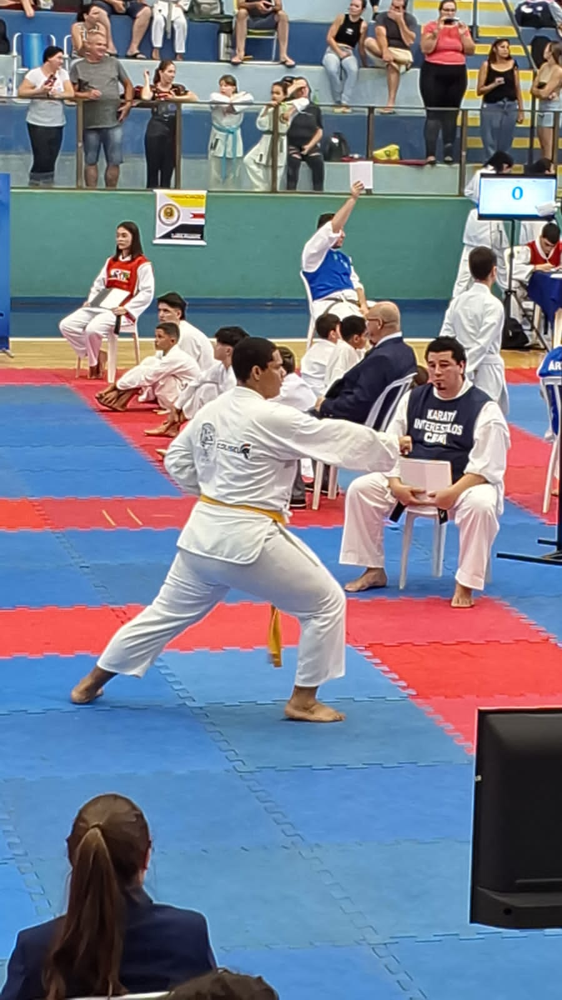

Karate Wado-Ryu
Como surgiu o estilo Wado-Ryu
Como vocês sabem existem diversos estilos no karate, os mais conhecidos são: shotokan, kyukushin, goju-ryu, shito-ryu, shorin-ryu, e o meu estilo o 'wado-ryu'